Accurate pain assessment in patients with limited ability to communicate, such as older adults with severe dementia, represents a critical healthcare challenge. Robust automated systems of pain behavior detection may facilitate such assessments. Existing pain detection datasets, however, suffer from limited ethnic/racial diversity, privacy constraints, and underrepresentation of older adults who are the primary target population for clinical deployment.
We present SynPAIN, a large-scale synthetic dataset containing 10,710 facial expression images (5,355 neutral/expressive pairs) across five ethnicities/races, representing two age groups (young: 20-35 years old, old: 75-93 years old), and two genders. Using commercial generative AI tools, we created demographically balanced synthetic identities with clinically meaningful pain expressions. Our validation demonstrates that synthetic pain expressions exhibit expected pain patterns, scoring significantly higher than neutral and non-pain expressions using clinically validated pain assessment tools based on facial action unit analysis.
We experimentally demonstrate SynPAIN's utility in identifying algorithmic bias in existing pain detection models. Through comprehensive bias evaluation, we reveal substantial performance disparities across demographics characteristics. These performance disparities were previously undetectable with smaller, less diverse datasets. Furthermore, we demonstrate that age-matched synthetic data augmentation improves pain detection performance on real clinical data, achieving a 2.4 percentage point improvement in average precision. SynPAIN addresses critical gaps in pain assessment research by providing the first publicly available, demographically diverse synthetic dataset specifically designed for older adult pain detection, while establishing a framework for measuring and mitigating algorithmic bias.
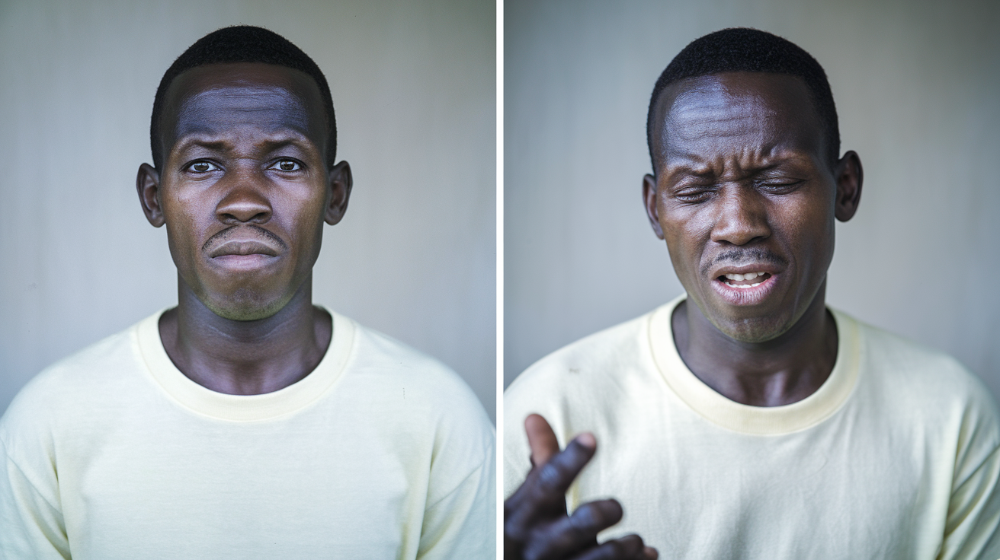
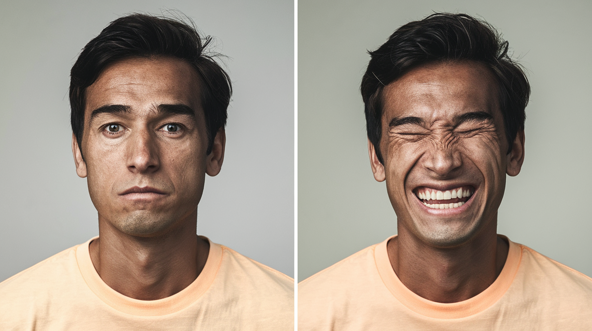
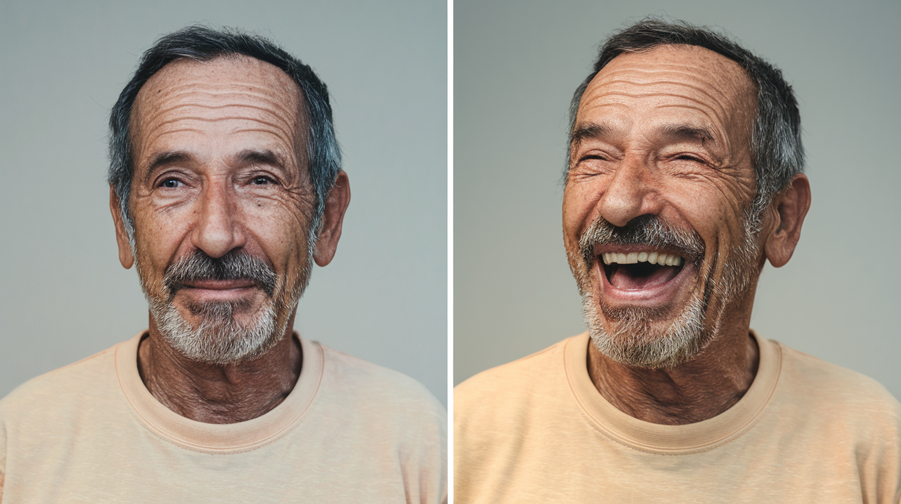
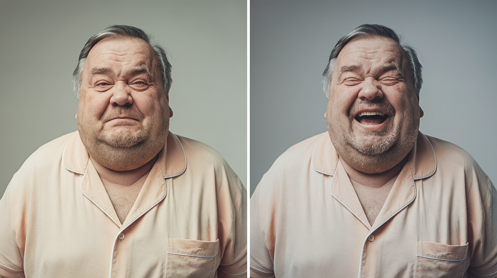
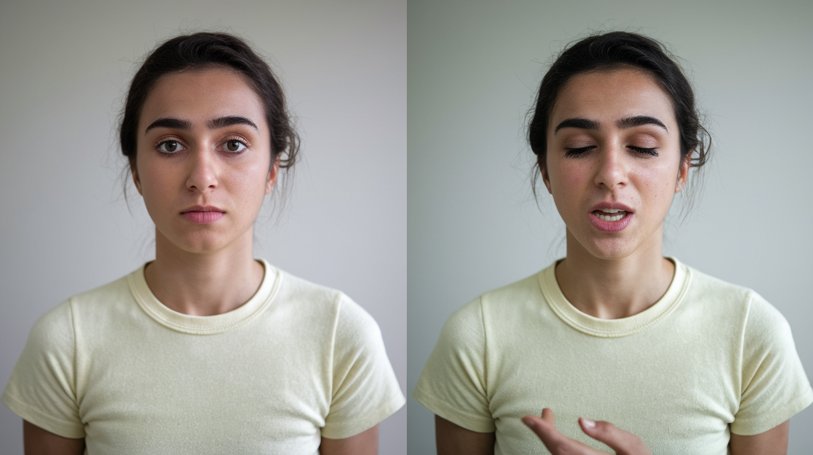
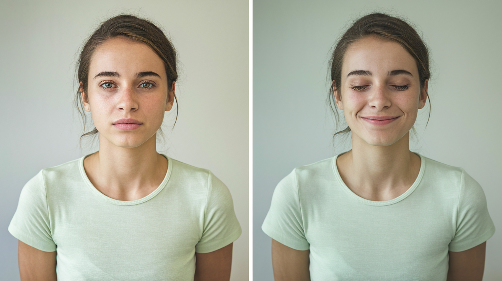
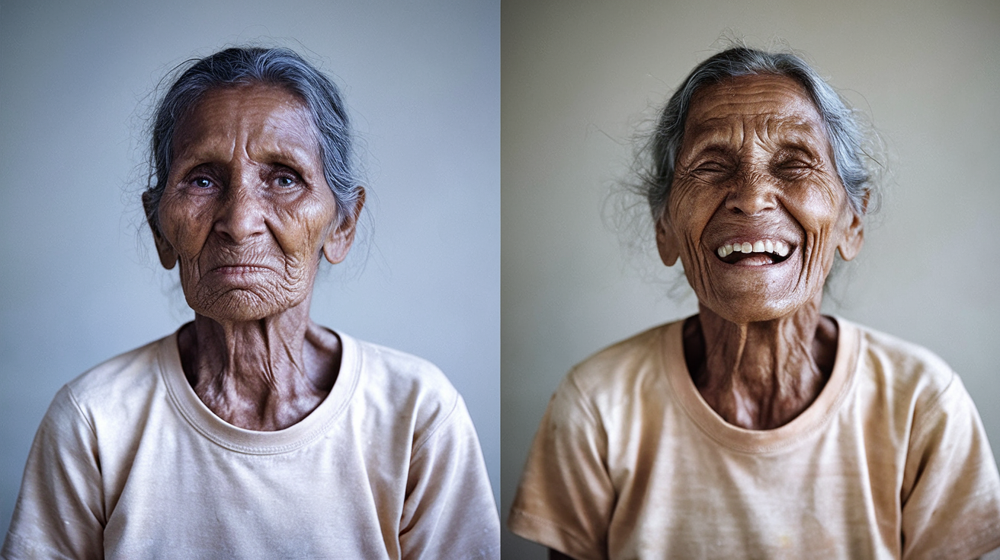
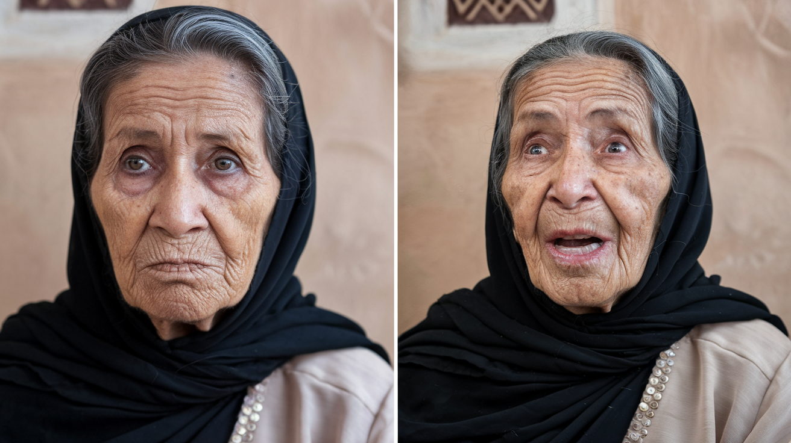
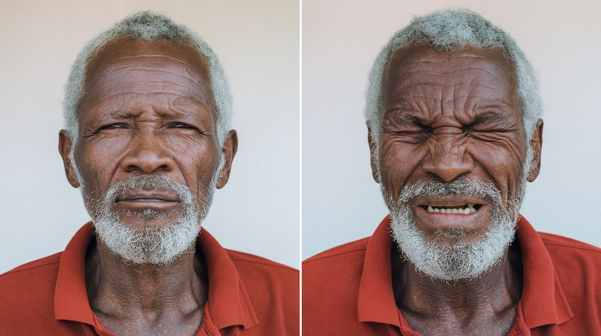
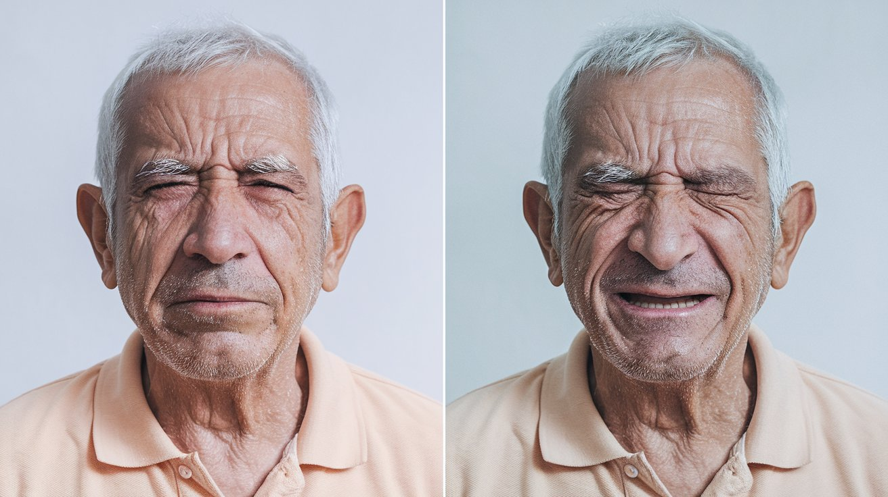
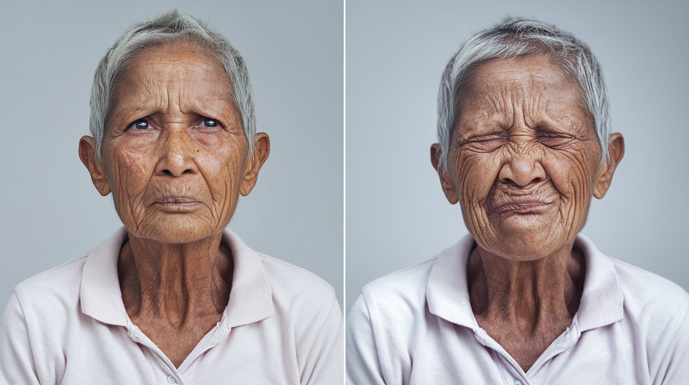
SynPAIN includes images of facial identities across various demographic groups, ensuring diverse representation in our synthetic dataset to address algorithmic bias.
SynPAIN also includes 5-second, 24 fps videos transitioning from neutral to expressive faces for 40 identities, representing one combination from each ethnicity/race, gender, expression type, and age group.
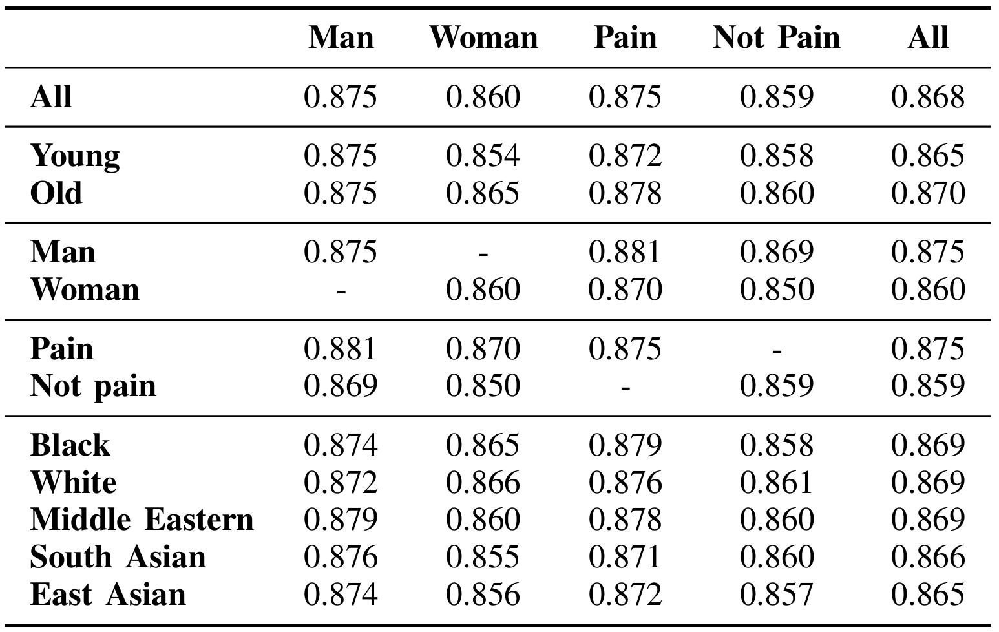
Average face quality score of SynPAIN images according to the DSL-FIQA method. We interpret these scores according to the ACR (Absolute Category Rating) scale: Bad (0-0.2), Poor (0.2-0.4), Fair (0.4-0.6), Good (0.6-0.8), and Excellent (0.8-1.0). SynPAIN images demonstrate excellent face quality across demographics.
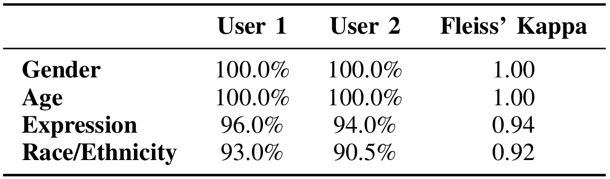
Taking a representative sample of SynPAIN images, two raters correctly identified the gender, age group, ethnicity, and expression type of identities in most samples, while showing high inter-rater reliability (measured by Fleiss' Kappa).
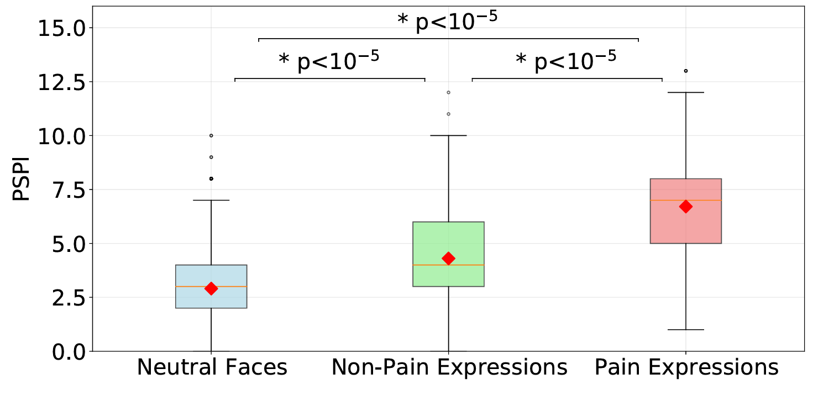
Distribution of PSPI scores calculated from FaceReader AU detections across expression conditions. Statistical significance was assessed using unpaired Mann-Whitney U-tests. Mean estimated PSPI scores are lowest for neutral expressions (2.9), followed by non-pain expressions (4.3), and highest for pain expressions (6.7).
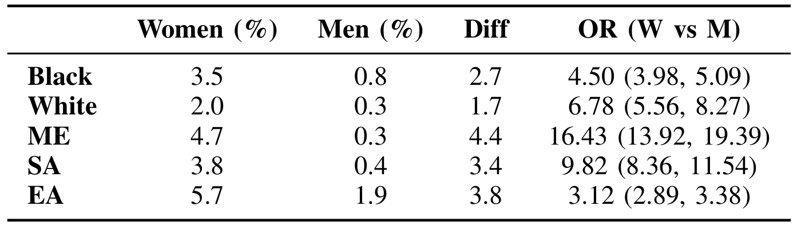
Percentage of within-group similarities between SynPAIN images. Similarity was measured using cosine similarity of PyFeat encodings of facial identities. These findings suggest that SynPAIN maintains strong identity consistency across expressions.
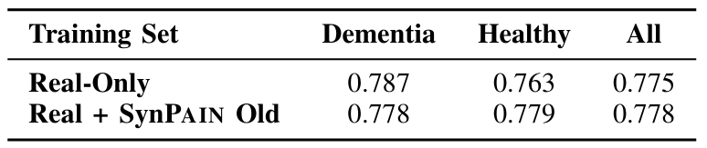
Performance of the PwCT model, a SOTA pain detection model, when evaluated on a test set from the UofR dataset. Training configurations include "Real-Only" (i.e., the UNBC dataset and a training set from the UofR dataset) and "Real + SynPAIN Old" (i.e., the UNBC dataset, a training set from the UofR dataset, and all old identities from SynPAIN). Performance is measured by area under the receiver operating characteristic curve (AUROC). These results show an improvement when SynPAIN is included in the training data.
@article{synpain2024,
title = {SynPAIN: A Synthetic Dataset of Pain and Non-Pain Facial Expressions},
author = {Babak Taati and Muhammad Muzammil and Yasamin Zarghami and Abhishek Moturu and Amirhossein Kazerouni and Hailey Reimer and Alex Mihailidis and Thomas Hadjistavropoulos},
journal = {arXiv},
year = {2025},
url = {https://arxiv.org/abs/2507.19673}
}